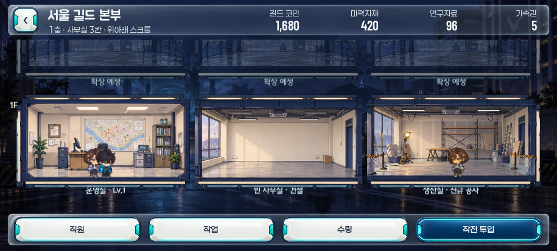
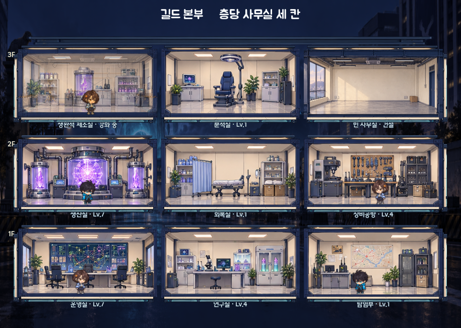
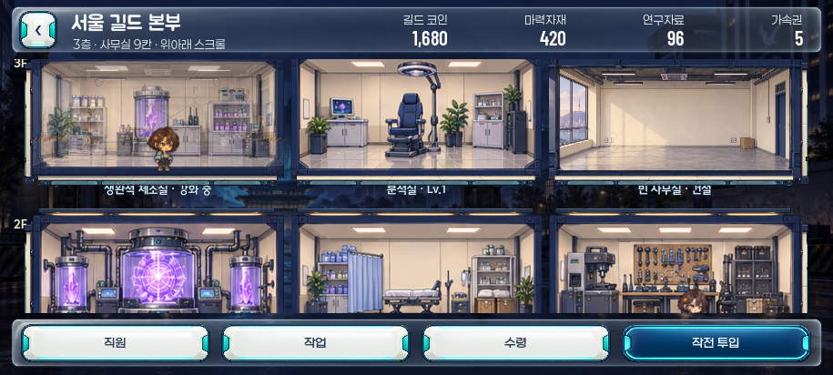
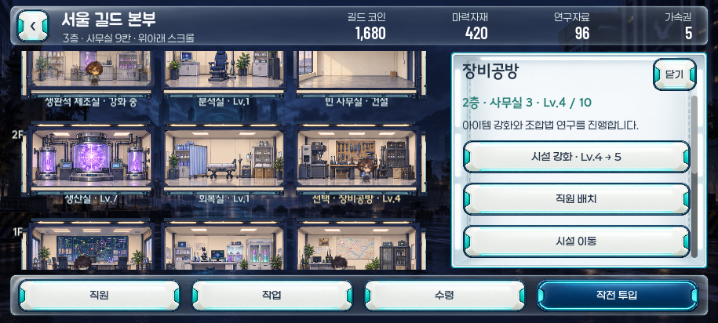

서울 길드 본부 · 층당 사무실 3개
정면 단면 · 층별 세로 스크롤 · 사무실 선택 즉시 오른쪽 관리창
초기 본부

처음에는 1층의 세 칸. 운영실 성장에 따라 위층이 열립니다.3층 확장

전체 건물 배치 참고 이미지
한 층에 세 칸씩, 총 아홉 칸. 건물 안에서 위아래로 터치 스크롤합니다.시설 선택과 관리

선택한 층의 세 사무실은 모두 보이며 관리 내용만 별도로 스크롤합니다. 직원은 창이 열려도 움직입니다.